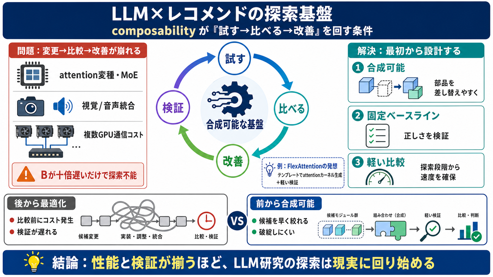

NVIDIA Nemotron 3 Ultra Powers Faster, More Efficient Reasoning ...
[Related Resources](https://developer.nvidia.com/blog/nvidia-nemotron-3-ultra-powers-faster-more-efficient-reasoning-for…

複雑なLLMの研究は「モデル定義を変えるだけ」では回りにくい。だから最初から“合成可能”な基盤と“検証できる”ベースラインが必要になる（合成可能性 composability）
attention変種、MoEルーティング、視覚/音声エンコーダ統合、複数GPU推論の通信コストなどで運用が重くなった。結果として「試す→比べる→改善」の反復が、性能差で途切れやすい。
recsysでは性能（速度・効率）が“オプション”ではなく“成立条件”になりやすい。LLMでも同様に、Bが大幅に遅いと比較の前に研究が止まる。
LLMはTransformer外の要素も増え、正しさ（実装）と速度（カーネル/通信）が結び付いた。研究対象は論文の数式だけでなく“実装・システム”まで広がる。
PyTorch/JAX定義→最適fused kernelへの変換には、まず“正しさ”を確かめるベースラインが要る。さらに性能差が大きいと比較以前に破綻する。
Tritonテンプレート等でattention系カーネル群を生成し、検証可能性と探索コスト低減を両立する。手作業のフル最適化に比べ、差し替え比較を先に進められる。
解の要点は「合成可能性」「固定ベースライン」「探索段階からの軽い比較」。後から頑張って統合するだけでは追いつかない。
“オートリサーチ的ループ”を強くするには、賢い自動化より先に試せる研究基盤が要る。アーキテクチャを本質に切り出し、合成可能にする。
手作業でカーネルを融合・最適化しようとすると時間がかかり、投資価値の検証が難しくなる。だから“探索の段階から”軽い差し替えを成立させる必要がある。
LLMの複雑化で、性能と検証が研究ループを支配する。composability（合成可能性）と固定ベースラインが揃うほど、探索は現実に回り始める。
文章の強みは、アルゴリズムよりも探索と検証の基盤（実装・性能）に焦点を当てた点。弱点は、ベースライン定義や指標の具体が不足し、適用境界が読み取りにくい点。
原文で触れられているテーマを、読む際の導線としてまとめます（詳細は原典で確認）。
[Related Resources](https://developer.nvidia.com/blog/nvidia-nemotron-3-ultra-powers-faster-more-efficient-reasoning-for…
[Resources](https://www.coderabbit.ai/blog/nemotron-3-ultra-release?). * [What is different this time](https://www.cod…
# Nemotron 3 Super Released : r/LocalLLaMA. [Skip to main content](https://www.reddit.com/r/LocalLLaMA/comments/1rqy3cx/…
## NVIDIA Nemotron 3 Ultra is built for high-throughput reasoning and long-running agent workflows. ollama run nemotron-…
# [AINews] NVIDIA Cosmos 3, Nemotron 3 Ultra, and RTX Spark. Fittingly, Cosmos 3 launched today, unifying language, imag…